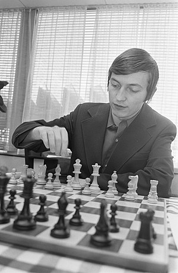

.jpg)
About me
Hello!
My name is Anatoly Karpov and I was a world chess champion.
I was born in May 23rd 1951 in USSR. At the age of 4, I learned to play chess.
At the age of 11, I received a rating of Master Candidate. My chess game was quickly improved thank's to the chess player Mikhail Botvinik.
In 1966, I received Master rating and became the youngest Soviet chess master. In 1969, I won my first world youth chess championship.
In 1970, I received grandMaster rating.
In 1975, I became the world chess champion after defeating Bobby Fischer. In 1985, I lost my title of world chess champion to Gary Kasparov.
Since 2005, I'm involved in Russia's political life.
I like to collect stamps and learn about chess.
My Photos
My Playlist
Give Me A Like
Scan My Code

Ans
| Web 1.0 | Web 2.0 | Web 3.0 |
| Read only web | Read and write web | Read, write and execute web |
| Designed webpages, sometimes with flash | Two way webpages, wikis, video, podcasts | 3D portals, games, virtual enviroments |
| Companies publish content that other people consume(for example CNN) | People publish content that other people consume(blogs) | People build applications that other people can iteract with, companies build platforms allowing people publish services by leveraging the connection between people or special cotent(like Facebook,Google Maps) |
Use case example: Displaying Bezeq website
| Web 1.0 | Web 2.0 | Web 3.0 |
| Static website which shows only the packages they sell, list of stores and contact information | Dynamic website that involves new user input features like chat with costumer service | Dynamic website that involves AI technologies like chatboots and involves 3D animations |